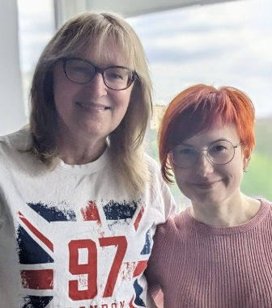

Розпочніть свою подорож у світ ІТ вже сьогодні!
Ваша унікальна можливість познайомитися з інформаційними технологіями! Дозвольте собі відкрити світ ІТ
Про нас
Людмила Булигіна — українська освітянка, волонтерка, інженерка Фізико-технічного інституту НТУУ «КПІ». Лауреатка премії Global Teacher Prize Ukraine 2022 у номінації «Вчителі-волонтери». Більше 20 років займається науково-дослідницькою роботою школярами у сфері комп'ютерних та технічних наук, є призери міжнародних конкурсів. Керівник секції Кібербезпека Київської Малої Академії Наук. Автор програм з інформатики та онлайн курсів з різних напрямів.

Про нас
Катерина Антоненко - викладачка дистанційної школи "Оптіма", авторка відео-уроків з інформатики в рамках проєкту “Всеукраїнська школа онлайн”, “Оновлена інформатика IT-студії” на національній платформі Дія.Освіта. Викладає та розробляє курси з програмування, веб-розробки, цифрової безпеки, ігр на Scratch